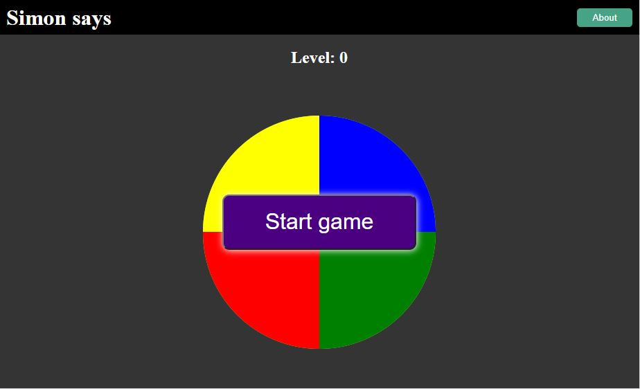
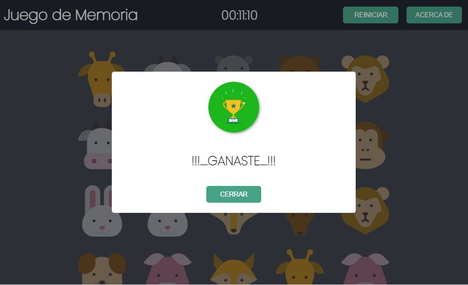
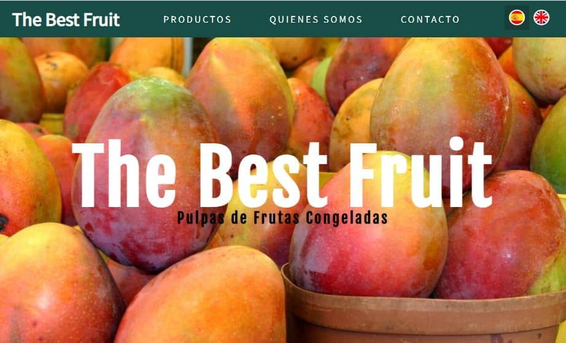

Hola, soy...
Desarrollador web frontend...
José Luis De La Cruz Vela
jldlcv@gmail.com | Rionegro - Colombia
Profesional en Ciencias de la Aministración y Desarrollador Web Frontend
• Soporte remoto y asistencial al usuario (cliente) mediante el programa TeamViewer.
• Diagnóstico y solución a los problemas de software y hardware del cliente.
• Instalar y configurar sistemas operativos como MS Windows y Linux (Ubuntu/Debian).
• Mantenimiento preventivo y correctivo a los computadores de mesa y portátiles.
• Planificar y supervisar los inventarios generales y cíclicos de 03 bodegas y 01 almacén.
• Auditar procesos logísticos: picking, packing, movimientos internos y logística inversa.
• Análisis de diferencias existentes entre la mercadería física y lo registrado en el sistema.
• Clasificar productos descontinuados y en mal estado para su baja en el sistema.
• Validar la operación de los cruces de artículos en base al costo promedio.
• Planificar y coordinar los inventarios generales, cíclicos y ABC de 10 bodegas y 01 CD.
• Elaborar y supervisar los inventarios cíclicos programados según cronograma.
• Realizar informes del indicador logístico ERI (Exactitud de Registro de Inventarios).
• Soporte del sistema SAP R/3 MM a los almacenes retail y al centro de distribución.
• Capacitar y certificar a los analistas de inventarios para ser monitores.
• Análisis y depuración de diferencias ocasionadas en las operaciones del almacén.
• Auditar procesos logísticos: picking, packing, movimientos internos y logística inversa.
• Control y seguimiento de la merma operativa (artículos no aptos para la venta).
• Realización de los cruces de artículos en base al costo promedio.
• Supervisar el cumplimiento del rotulado de la mercadería (Bind Card).
• Universidad Nacional de Educación Enrique Guzmán y Valle (2017 - Lima - Perú)
• Cámara Nacional de Comercio del Perú (2017 - Lima - Perú)
• Instituto de Educación Superior Tecnológico María Araoz Pinto (2011 - Lima - Perú)